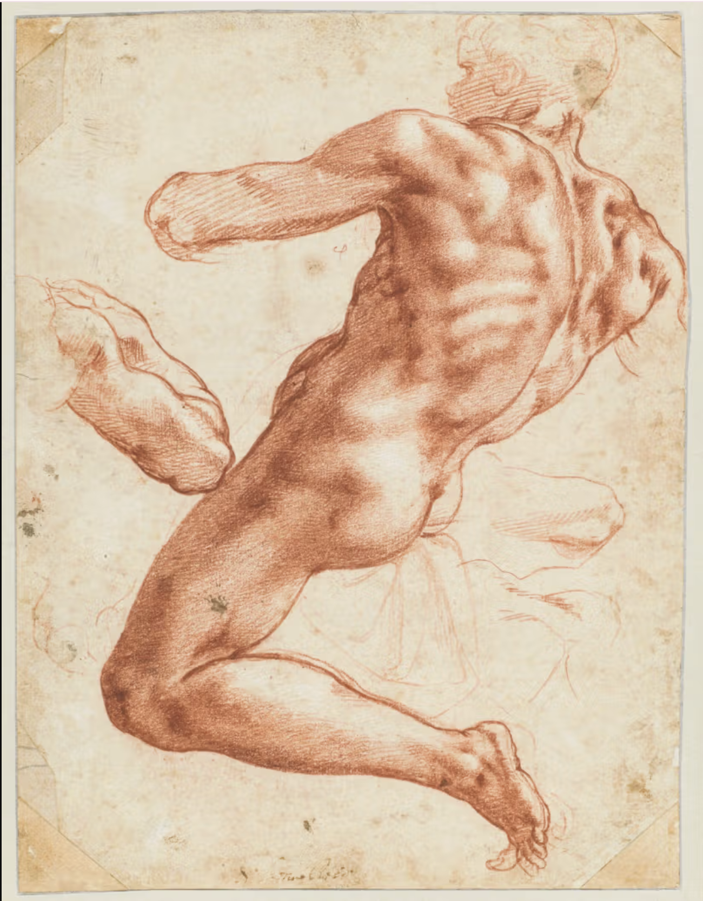
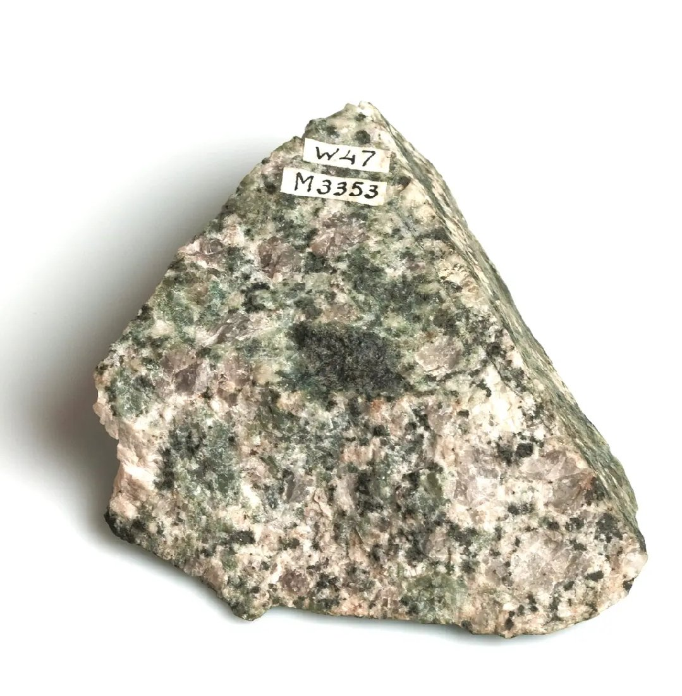

 Figuurstudie voor een Ignudo in de Sixtijnse Kapel Michelangelo Buonarroti (1475-1564) ca.1511
 Topje van de Mont Blanc De Saussure, Horace-Bénédict, Graniet overtrokken met chloriet (v. d. hoogste top van Mont Blanc) 18de eeuw
Beloningspenning van de Staten-Generaal aan bevelhebber Wolter Jan baron Bentinck, die bij Doggersbank gestreden heeft. Swinderen, Nicolaas van (1705-1760) 1781